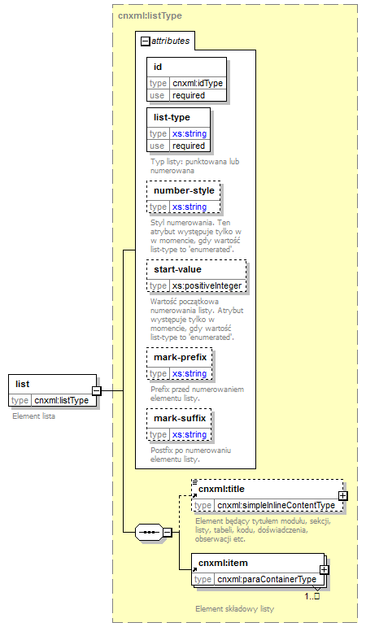

| diagram |
 |
| namespace |
http://cnx.rice.edu/cnxml |
| type |
cnxml:listType |
| properties |
|
| children |
cnxml:title cnxml:item |
| used by |
|
| attributes |
| Name | Type | Use | Default | Fixed | Annotation | | id | idType | required | | | | | list-type | derived by: xs:string | required | | | | documentation | | Typ listy: punktowana lub numerowana |
| | number-style | derived by: xs:string | | | | | documentation | | Styl numerowania. Ten atrybut występuje tylko w w momencie, gdy wartość list-type to 'enumerated'. |
| | start-value | xs:positiveInteger | | | | | documentation | | Wartość początkowa numerowania listy. Atrybut występuje tylko w momencie, gdy wartość list-type to 'enumerated'. |
| | mark-prefix | derived by: xs:string | | | | | documentation | | Prefix przed numerowaniem elementu listy. |
| | mark-suffix | derived by: xs:string | | | | | documentation | | Postfix po numerowaniu elementu listy. |
|
|
| annotation |
| documentation | | Element lista |
|
| source |
<xs:element name="list" type="cnxml:listType">
<xs:annotation>
<xs:documentation>Element lista</xs:documentation>
</xs:annotation>
</xs:element> |